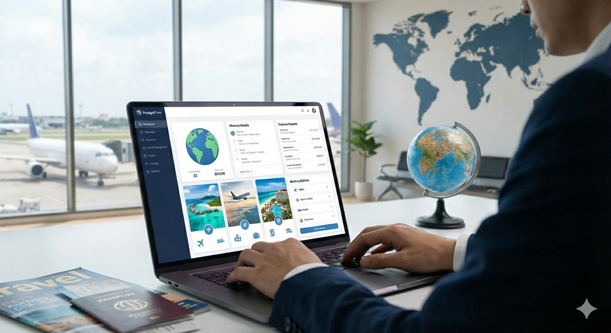

Travel Management Company (TMC) Software Explained
A TMC (Travel Management Company) is a business that helps organizations manage their travel arrangements. TMCs tend to use various software tools to streamline the process of booking flights, hotels, and other travel services for their clients. I will go through some of the most common types of software you will come across when working with a TMC.
GDS - Global Distribution System
Arguably the most important software for a TMC is something called a GDS (Global Distribution System). It's a software system which lets travel agents make bookings for their clients with airlines, hotels, car rental companies, and other travel service providers. The main GDS systems used today are Amadeus, Sabre, and Travelport.
There are several reasons why TMCs usually prefer booking through a GDS as opposed to direct with the airlines or hotels:
- Consolidation: A GDS aggregates inventory from multiple service providers, allowing travel agents to search and book from a single platform rather than dealing with each provider separately.
- Access to negotiated rates: TMCs often have corporate agreements with service providers that offer discounted rates not available to the general public. These negotiated rates are typically accessible through the GDS.
- Comprehensive data: GDS systems provide detailed information about availability, pricing, and policies, enabling travel agents to make informed decisions for their clients.
- Efficiency: Using a GDS streamlines the booking process, saving time for travel agents and allowing them to manage multiple bookings more effectively.
On the other hand, there might be reasons for companies to book direct instead of through a GDS, such as:
- Lower fees: Some service providers may offer lower fees for direct bookings compared to those made through a GDS.
- Special promotions: Direct bookings may provide access to exclusive promotions or packages not available through a GDS.
- Flexibility: Booking directly with service providers can sometimes offer more flexibility in terms of changes or cancellations.